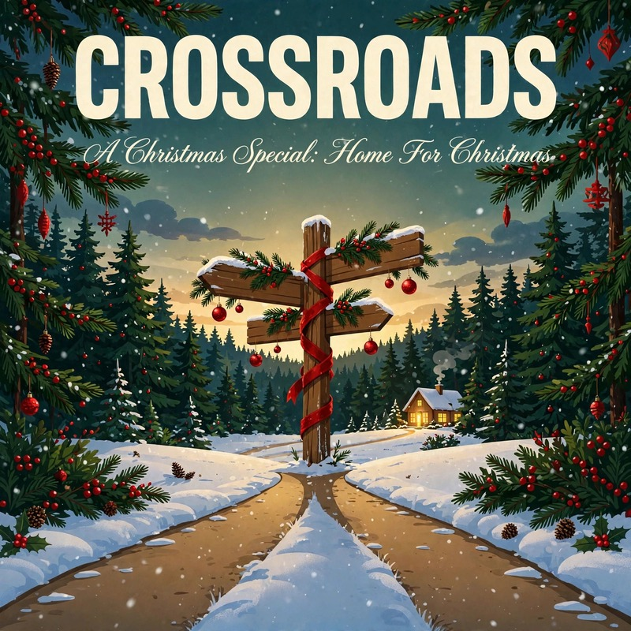

A Christmas Special: Home For Christmas
Nothing playing yet
Pick the episode below, or press Play All.
Five connected episodes, one each week: four friends count down to Christmas, volunteer for Christmas Together on Christmas Eve, and discover what they really want underneath their wish lists.
New episodes are added here as they are finished. Your place is remembered on this device, so you can pick up where you left off.